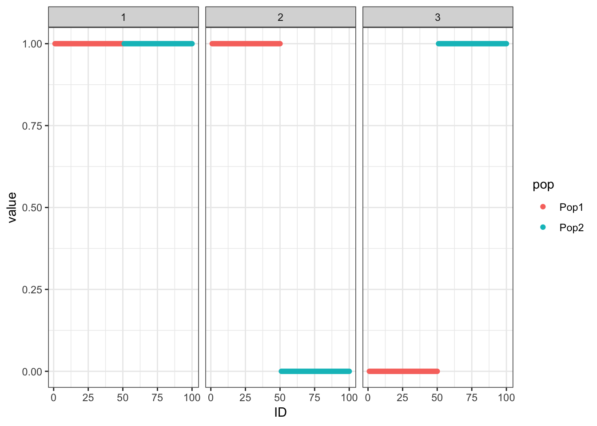
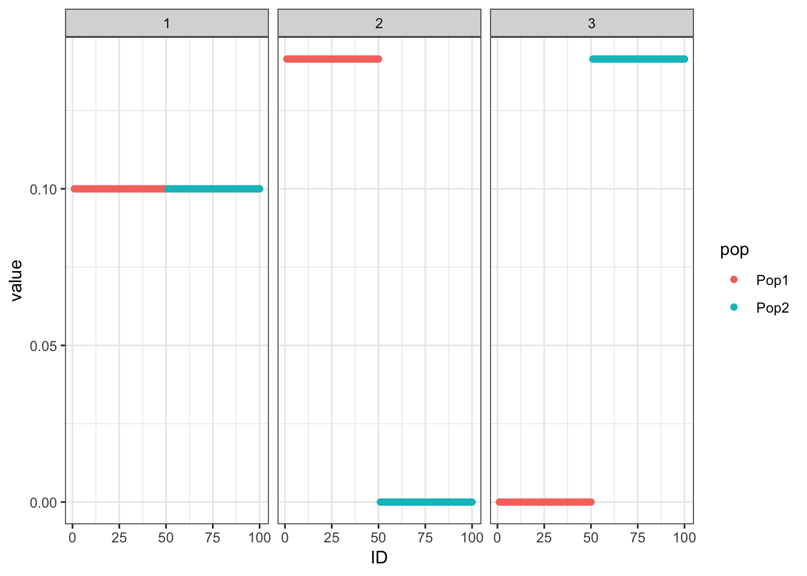
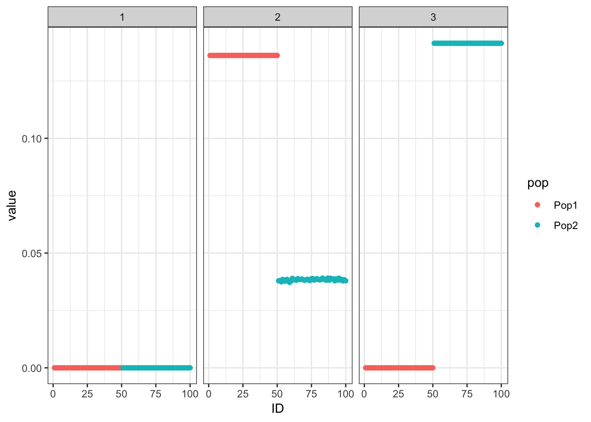
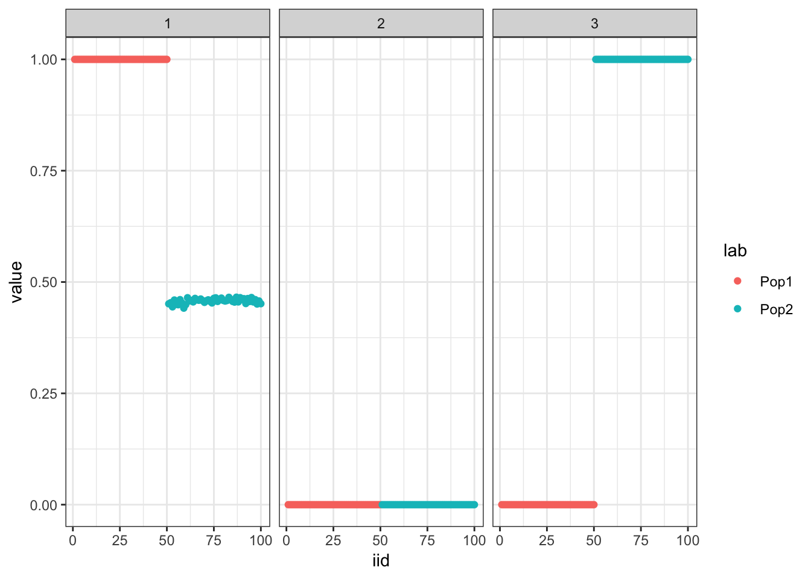

Last updated: 2019-12-21
Checks: 7 0
Knit directory: drift-workflow/analysis/
This reproducible R Markdown analysis was created with workflowr (version 1.4.0). The Checks tab describes the reproducibility checks that were applied when the results were created. The Past versions tab lists the development history.
Great! Since the R Markdown file has been committed to the Git repository, you know the exact version of the code that produced these results.
Great job! The global environment was empty. Objects defined in the global environment can affect the analysis in your R Markdown file in unknown ways. For reproduciblity it’s best to always run the code in an empty environment.
The command set.seed(20190211) was run prior to running the code in the R Markdown file. Setting a seed ensures that any results that rely on randomness, e.g. subsampling or permutations, are reproducible.
Great job! Recording the operating system, R version, and package versions is critical for reproducibility.
Nice! There were no cached chunks for this analysis, so you can be confident that you successfully produced the results during this run.
Great job! Using relative paths to the files within your workflowr project makes it easier to run your code on other machines.
Great! You are using Git for version control. Tracking code development and connecting the code version to the results is critical for reproducibility. The version displayed above was the version of the Git repository at the time these results were generated.
Note that you need to be careful to ensure that all relevant files for the analysis have been committed to Git prior to generating the results (you can use wflow_publish or wflow_git_commit). workflowr only checks the R Markdown file, but you know if there are other scripts or data files that it depends on. Below is the status of the Git repository when the results were generated:
Ignored files:
Ignored: .RData
Ignored: .Rhistory
Ignored: analysis/.Rhistory
Ignored: analysis/flash_cache/
Ignored: data.tar.gz
Ignored: data/datasets/
Ignored: data/raw/
Ignored: docs/figure/.DS_Store
Ignored: docs/figure/hoa_global.Rmd/.DS_Store
Ignored: output.tar.gz
Ignored: output/
Untracked files:
Untracked: analysis/arabidopsis-eda.Rmd
Untracked: data/HGDP_PopStruct_Exercise/
Note that any generated files, e.g. HTML, png, CSS, etc., are not included in this status report because it is ok for generated content to have uncommitted changes.
These are the previous versions of the R Markdown and HTML files. If you’ve configured a remote Git repository (see ?wflow_git_remote), click on the hyperlinks in the table below to view them.
| File | Version | Author | Date | Message |
|---|---|---|---|---|
| Rmd | d4d03c5 | jhmarcus | 2019-12-21 | wflow_publish(“simple_2pop_tree_simulation_bimodal.Rmd”) |
| Rmd | 8b7a8bc | jhmarcus | 2019-12-20 | updated 2 pop sim to have longer maxiter |
| html | 8b7a8bc | jhmarcus | 2019-12-20 | updated 2 pop sim to have longer maxiter |
| Rmd | 7b7b6d4 | jhmarcus | 2019-12-19 | added init drift alpha application to simulation |
| html | 7b7b6d4 | jhmarcus | 2019-12-19 | added init drift alpha application to simulation |
| Rmd | e3936bc | jhmarcus | 2019-12-01 | pushing 2 pop analysis |
| html | e3936bc | jhmarcus | 2019-12-01 | pushing 2 pop analysis |
Here we simulate Gaussian data under a simple 2 population tree i.e. a split and explore the interpretability of flashier and drift fits to the data. The data generated under this tree can be represented as a probabilistic matrix factorization model with 1 shared factor and 2 population specific factors … this is what we’d like to recover.
Import the required packages and load helper scripts for this analysis:
library(ggplot2)
library(dplyr)
library(tidyr)
library(flashier)
library(drift.alpha)
source("../code/ebnm_functions.R")Here I simulate the data generated from a simple 2 population tree. I set the residual std. dev. to 1 and prior variances to 1. There are 50 individuals per population and 10000 simulated SNPs:
##### sim #####
set.seed(235)
n_per_pop <- 50
pops <- c(rep("Pop1", n_per_pop), rep("Pop2", n_per_pop))
sigma_e <- 1.0
sigma_b <- c(1.0, 1.0, 1.0)
p = 10000
sim_res <- drift.alpha::two_pop_tree_sim(n_per_pop, p, sigma_e, sigma_b)
K <- 3
Y <- sim_res$Y
n <- nrow(Y)
p <- ncol(Y)
##### viz #####
drift.alpha::plot_loadings(sim_res$L, pops)
| Version | Author | Date |
|---|---|---|
| 7b7b6d4 | jhmarcus | 2019-12-19 |
Run the greedy algorithm which seems to recover the tree:
##### fit #####
flash_greedy_res <- flash.init(Y, var.type=0) %>%
flash.add.greedy(Kmax=K,
prior.family=c(drift.alpha::prior.bimodal(grid_size = 40),
prior.normal()))Adding factor 1 to flash object...
Adding factor 2 to flash object...
Adding factor 3 to flash object...
Wrapping up...
Done.##### viz #####
pm <- flash_greedy_res$loadings.pm[[1]]
plot_loadings(pm, pops)
Initialize the backfitting algorithm with the greedy solution which recovers a sparser representation of the tree i.e. it zeros out the shared factor:
##### fit #####
flash_backfit_res <- flash_greedy_res %>% flash.backfit()Backfitting 3 factors (tolerance: 1.49e-02)...
Difference between iterations is within 1.0e+02...
Difference between iterations is within 1.0e+01...
Difference between iterations is within 1.0e+00...
Difference between iterations is within 1.0e-01...
Difference between iterations is within 1.0e-02...
Wrapping up...
Done.##### viz #####
pm <- flash_backfit_res$loadings.pm[[1]]
elbo_gr_bf <- flash_backfit_res$elbo
plot_loadings(flash_backfit_res$loadings.pm[[1]], pops)
Initialize from the truth and fix the prior which as expected recovers the tree representation we want:
##### fit #####
flash_fix_res <- flash.init(Y, var.type=0) %>%
flash.init.factors(EF=list(u=sim_res$L, d=rep(1, K), v=sim_res$F),
prior.family=list(c(prior.fixtwopm(pi = c(0.0, 1.0)),
prior.fixnormal()),
c(prior.fixtwopm(pi = c(.5, .5)),
prior.fixnormal()),
c(prior.fixtwopm(pi = c(.5, .5)),
prior.fixnormal()))) %>%
flash.backfit()Backfitting 3 factors (tolerance: 1.49e-02)...
Difference between iterations is within 1.0e+02...
Difference between iterations is within 1.0e+01...
Wrapping up...
Done.##### viz #####
pm <- flash_fix_res$loadings.pm[[1]]
elbo_init_true <- flash_fix_res$elbo
plot_loadings(flash_fix_res$loadings.pm[[1]], pops)
Compare the final elbos between the solution where we initialize from the truth and fix the prior to the solution where we initialize from the greedy fit and don’t fix the prior:
print(elbo_init_true)[1] -1482301print(elbo_gr_bf)[1] -1465622print(elbo_init_true>elbo_gr_bf)[1] FALSEThe solution where we initialize with greedy fit has a higher ELBO then when we initialize from the truth and fix the prior.
driftLets now try our new drift algorithm which uses the same bimodal mixture prior for the loadings and Gaussian prior for the factors but a new variational approximation for the factors which accounts for correlations in the posterior i.e. full mvn for the variational approximation:
init <- drift.alpha:::init_from_flash(flash_greedy_res)
drift_res <- drift.alpha:::drift(init) 1 : -1465398.387
2 : -1464851.616
3 : -1464736.843
4 : -1464704.063
5 : -1464692.839
6 : -1464688.561
7 : -1464686.825
8 : -1464686.094
9 : -1464685.780
10 : -1464685.642
11 : -1464685.582
12 : -1464685.555
13 : -1464685.543
14 : -1464685.537 plot_loadings(drift_res$EL, pops)
| Version | Author | Date |
|---|---|---|
| 7b7b6d4 | jhmarcus | 2019-12-19 |
Very exciting! It seems to maintain the tree structure that the greedy solution finds.
print(drift_res$prior_s2)[1] 1.0185987 0.9678496 1.0085159print(drift_res$resid_s2)[1] 1.001795drift recovers the correct prior and residual variances.
drift_res$CovF [,1] [,2] [,3]
[1,] 0.3371207 -0.3302804 -0.3305514
[2,] -0.3302804 0.3432082 0.3238444
[3,] -0.3305514 0.3238444 0.3437556cov2cor(drift_res$CovF) [,1] [,2] [,3]
[1,] 1.0000000 -0.9709821 -0.9710049
[2,] -0.9709821 1.0000000 0.9428283
[3,] -0.9710049 0.9428283 1.0000000We can see drift is estimating very strong correlations in the posterior. Lets try initializing from the flash backfit solution:
init <- drift.alpha:::init_from_flash(flash_backfit_res)
drift_res <- drift.alpha:::drift(init, maxiter = 1000) 1 : -1465184.207
2 : -1465104.297
3 : -1465098.698
4 : -1465094.188
5 : -1465090.174
6 : -1465083.404
7 : -1465076.797
8 : -1465070.348
9 : -1465064.063
10 : -1465057.963
11 : -1465052.095
12 : -1465046.547
13 : -1465041.447
14 : -1465036.954
15 : -1465033.212
16 : -1465030.290
17 : -1465026.778
18 : -1465021.477
19 : -1465016.299
20 : -1465011.244
21 : -1465006.319
22 : -1465001.538
23 : -1464996.929
24 : -1464992.535
25 : -1464988.423
26 : -1464984.677
27 : -1464981.389
28 : -1464978.638
29 : -1464976.461
30 : -1464974.634
31 : -1464970.995
32 : -1464967.332
33 : -1464963.789
34 : -1464960.362
35 : -1464957.048
36 : -1464953.850
37 : -1464950.773
38 : -1464947.831
39 : -1464945.047
40 : -1464942.455
41 : -1464940.096
42 : -1464938.018
43 : -1464936.260
44 : -1464934.847
45 : -1464933.779
46 : -1464932.980
47 : -1464931.239
48 : -1464928.862
49 : -1464926.553
50 : -1464924.310
51 : -1464922.131
52 : -1464920.015
53 : -1464917.962
54 : -1464915.972
55 : -1464914.050
56 : -1464912.200
57 : -1464910.428
58 : -1464908.745
59 : -1464907.164
60 : -1464905.702
61 : -1464904.382
62 : -1464903.231
63 : -1464902.273
64 : -1464901.365
65 : -1464900.729
66 : -1464900.173
67 : -1464898.656
68 : -1464896.876
69 : -1464895.141
70 : -1464893.448
71 : -1464891.799
72 : -1464890.191
73 : -1464888.625
74 : -1464887.102
75 : -1464885.623
76 : -1464884.190
77 : -1464882.808
78 : -1464881.480
79 : -1464880.214
80 : -1464879.018
81 : -1464877.902
82 : -1464876.875
83 : -1464875.946
84 : -1464875.123
85 : -1464874.410
86 : -1464873.807
87 : -1464873.310
88 : -1464872.911
89 : -1464872.600
90 : -1464872.363
91 : -1464872.186
92 : -1464872.003
93 : -1464871.295
94 : -1464870.266
95 : -1464869.264
96 : -1464868.287
97 : -1464867.334
98 : -1464866.406
99 : -1464865.502
100 : -1464864.621
101 : -1464863.763
102 : -1464862.929
103 : -1464862.118
104 : -1464861.331
105 : -1464860.567
106 : -1464859.829
107 : -1464859.118
108 : -1464858.434
109 : -1464857.780
110 : -1464857.158
111 : -1464856.571
112 : -1464856.020
113 : -1464855.509
114 : -1464855.039
115 : -1464854.612
116 : -1464854.228
117 : -1464853.889
118 : -1464853.592
119 : -1464853.337
120 : -1464853.120
121 : -1464852.940
122 : -1464852.791
123 : -1464852.670
124 : -1464852.574
125 : -1464852.497
126 : -1464852.438
127 : -1464852.392
128 : -1464852.357
129 : -1464852.330
130 : -1464852.310
131 : -1464852.295
132 : -1464852.284
133 : -1464852.276 plot_loadings(drift_res$EL, pops)
This keeps the same representation but with a larger elbo.
print(drift_res$elbo)[1] -1464852print(flash_backfit_res$elbo)[1] -1465622
sessionInfo()R version 3.6.1 (2019-07-05)
Platform: x86_64-apple-darwin13.4.0 (64-bit)
Running under: macOS Mojave 10.14.2
Matrix products: default
BLAS/LAPACK: /Users/jhmarcus/miniconda3/envs/flash_e/lib/R/lib/libRblas.dylib
locale:
[1] en_US.UTF-8/en_US.UTF-8/en_US.UTF-8/C/en_US.UTF-8/en_US.UTF-8
attached base packages:
[1] stats graphics grDevices utils datasets methods base
other attached packages:
[1] ebnm_0.1-24 ashr_2.2-38 drift.alpha_0.0.1 flashier_0.2.4
[5] tidyr_0.8.3 dplyr_0.8.0.1 ggplot2_3.1.1
loaded via a namespace (and not attached):
[1] Rcpp_1.0.2 compiler_3.6.1 pillar_1.3.1
[4] git2r_0.26.1 plyr_1.8.4 workflowr_1.4.0
[7] iterators_1.0.12 tools_3.6.1 digest_0.6.18
[10] lattice_0.20-38 evaluate_0.13 tibble_2.1.1
[13] gtable_0.3.0 pkgconfig_2.0.2 rlang_0.4.0
[16] foreach_1.4.7 Matrix_1.2-17 parallel_3.6.1
[19] yaml_2.2.0 xfun_0.6 withr_2.1.2
[22] stringr_1.4.0 knitr_1.22 fs_1.2.7
[25] rprojroot_1.3-2 grid_3.6.1 tidyselect_0.2.5
[28] glue_1.3.1 R6_2.4.0 rmarkdown_1.12
[31] mixsqp_0.2-4 purrr_0.3.2 magrittr_1.5
[34] whisker_0.3-2 MASS_7.3-51.4 codetools_0.2-16
[37] backports_1.1.4 scales_1.0.0 htmltools_0.3.6
[40] assertthat_0.2.1 colorspace_1.4-1 labeling_0.3
[43] stringi_1.4.3 pscl_1.5.2 doParallel_1.0.15
[46] lazyeval_0.2.2 munsell_0.5.0 truncnorm_1.0-8
[49] SQUAREM_2017.10-1 crayon_1.3.4